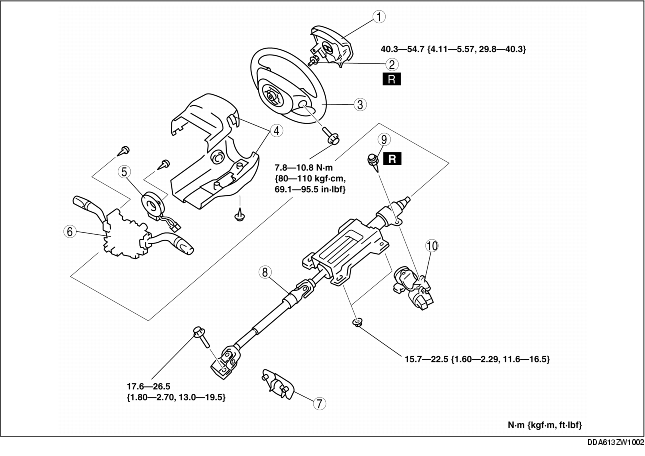

1. Remove the clip securing the key interlock cable.
2. Remove in the order indicated in the table.
3. Install in the reverse order of removal.
4. If the steering lock component of a vehicle equipped with the advanced keyless system is replaced, perform the following procedure after installation.

.
|
1
|
Air bag module
|
|
2
|
Lockbolt
|
|
3
|
Steering wheel
(See Steering Wheel Removal Note.)
|
|
4
|
Column cover
|
|
5
|
Clock spring
|
|
6
|
Combination switch
|
|
7
|
Steering shaft cover
|
|
8
|
Steering shaft
|
|
9
|
Steering lock mounting bolt
|
|
10
|
Steering lock component
|
1. Set the wheels in the straight-ahead position.
2. Remove the steering wheel using any commercially available puller.
1. Make a groove in the heads of the steering lock mounting bolts using a chisel and hammer.
2. Remove the bolts using a flathead screwdriver.
3. Remove the steering lock.
1. Assemble the steering lock to the steering shaft.
2. Verify the operation condition of the steering lock system.
3. Install new steering lock mounting bolts.
4. Tighten the bolts until the heads break off.
1. Set the wheels in the straight-ahead position, and install the steering wheel.